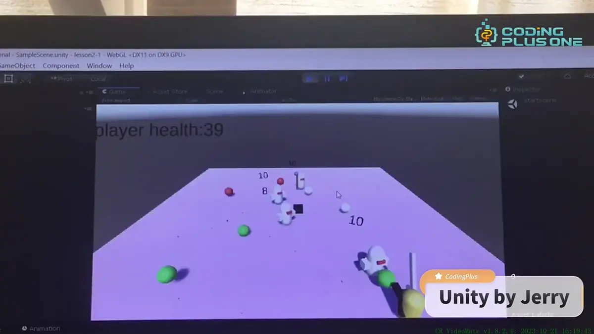

Sudoku
A recorded walkthrough of my Sudoku project. The demonstration below shows the interface and interaction.
05 / SUDOKU + UNITY / SELECTED WORK
Ideas you can play with.
Two game projects, shown through recorded demonstrations: a Sudoku project and a game built in Unity.

THE STORY
A recorded walkthrough of my Sudoku project. The demonstration below shows the interface and interaction.
A second project explores making a game in Unity. The recording presents the game as it runs, showing its visual environment and gameplay.